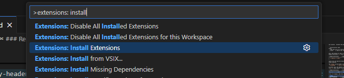
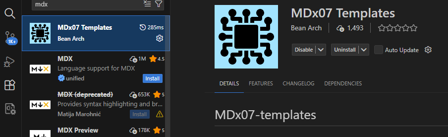
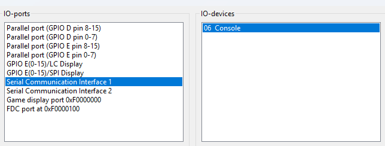
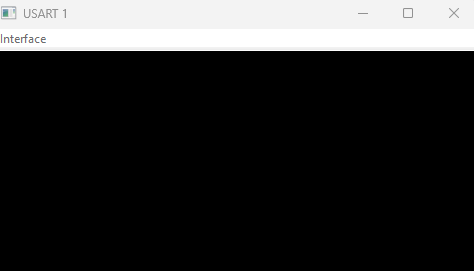
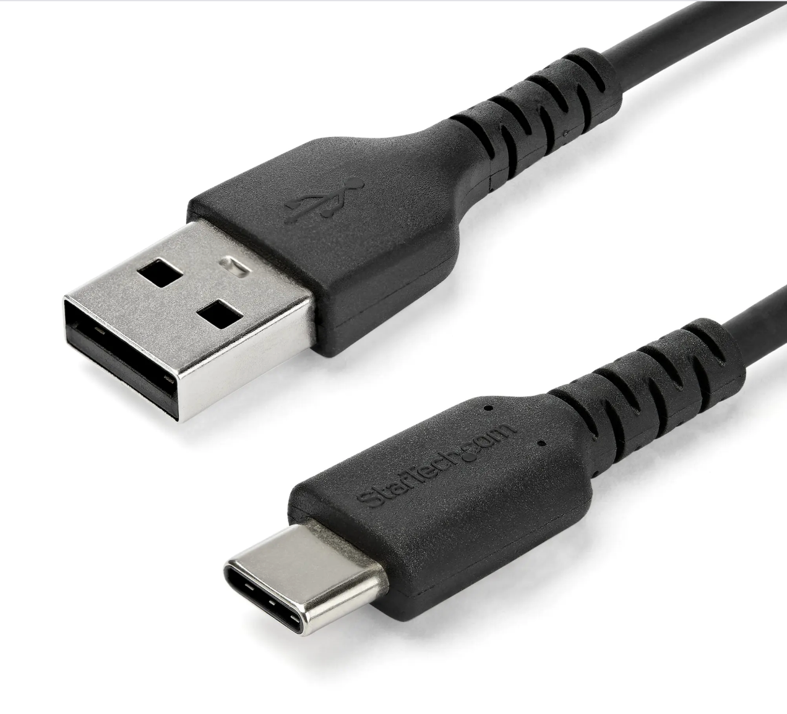
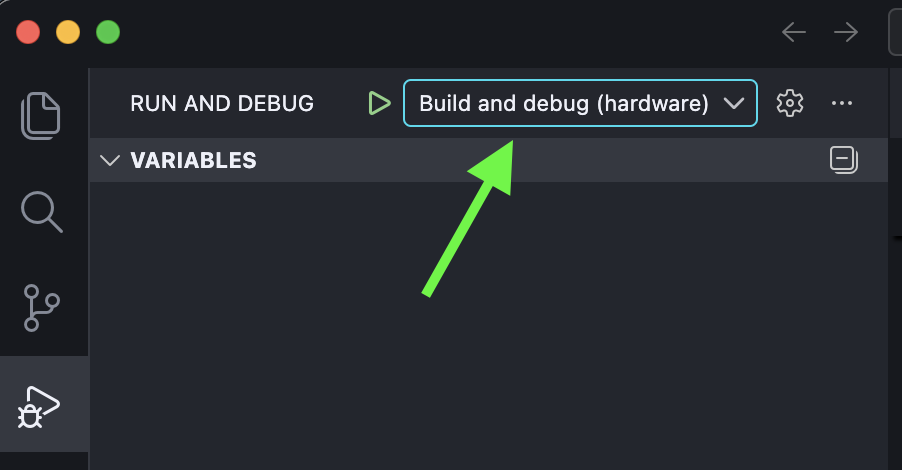

Getting Started with
Visual Studio Code
These are the instructions for setting up the programming environment
you will use throughout the course.
Table of contents
Setting up VSCode
- Install Visual Studio Code from https://code.visualstudio.com/.
- Launch Visual Studio Code.
- Bring up the command palette by pressing
Ctrl+⇧+P (on Mac:
⌘+⇧+P). Type and select “Extensions:
Install Extensions”

- Search for “MDx07 Templates” and install it.

- Install development tools: Bring up the command
palette again (Ctrl+⇧+P, on Mac:
⌘+⇧+P). Select “MDx07: Install MD307
Development Tools”.
- This will take a little while, and you should have at least 2GB of
free space on your system harddisk.
Creating a project
Create a folder where you want your project code to reside.
- Note: It is easiest to avoid using a path that
contains non ascii characters. If you really want to use such a path,
see notes below.
Go the top menu and select “File → Open Folder…” and open this
(empty) folder.
Create your project: Once again bring up the
command palette and select “MDx07: Initialize project”. Then select
“Basic Templates” and then “MD307 Assembly Project”.
If you have
‘åäö’ in your project path on Windows
If you have any non-ascii-character like ‘åäö’ in your username, your
“Documents” or “Desktop” paths will have that as well. This may cause
problems in GDB. You can circumvent the problem either by creating your
projects in directories without the problematic charachters (like “C:")
or by activating support for UTF-8 in paths:
- Right click your start menu → Run
- Run
intl.cpl
- Choose the tab Administrative
- Choose Change system locale…
- Check the box Beta: Use Unicode UTF-8 for worldwide language
support.
- Press Ok and restart the computer.
Debugging with simulator
- Start the MD307 simulator: In the command palette,
select “MDx07: Launch Simserver”. The Simserver window will now open.
- The first time you start simserver, choose “Server → Set Target…”
from the menu, and select MD307
- In the Simserver window, select “Server → IO Setup”.
- Under “IO-Ports”, select “Serial Communication Interface 1” and then
select “06 Console” under “IO-Devices”.

- Press the “Connect” button and then the “OK” button. You should now
see a little console window, like this:

Run a little program to make sure everything
works:
- Go back to Visual Studio Code and press F5 (“Start
Debugging”) and wait until the little yellow arrow appears at the first
instruction.
- Then, step through the instructions with F10 (“Step
Over”) until a greeting on the console window.
If you have any problems, go to one of the exercise sessions and ask
a TA to help you. Otherwise, you are done and can start the course!
Debugging with hardware
If you wish to debug with the MD307 hardware on your own laptop,
please note that it’s still on a experimental stage! If it works,
consider yourself lucky and maybe buy a lottery ticket!
⚠️ Always use a USB-A → USB-C cable. (USB-C → USB-C cable won’t work
due to a hardware design flaw.)

Change debug configuration to “Build and debug (hardware)” (don’t
forget to change back next time switch to the simulator!)

Next, follow the OS-specific instructions below.
Windows
- Install the proper USB drivers by bringing up the command palette in
VSCode and choose “MDx07: Install WCH-Link drivers (Windows only)”
- A dialogue will appear “Do you want to allow this app from an
unknown publisher to make changes…”. Press “yes”
A terminal window will appear and report whether the installation was
successful or not.
Linux
- Open a terminal and run the command
sudo adduser $USER dialout
MacOS
Congratulations on your computer choice, it should work out of the
box!
Turn off your AI “friend”
Finally a word of advice. If you have GitHub copilot
installed, it will immediately start “helping” you by suggesting the
next instruction for you. This can be extremely useful for you in the
future, when you know assembly programming well, but is disastrous for
learning purposes. So (for your own sake) turn it off by unchecking the
boxes in the image below.